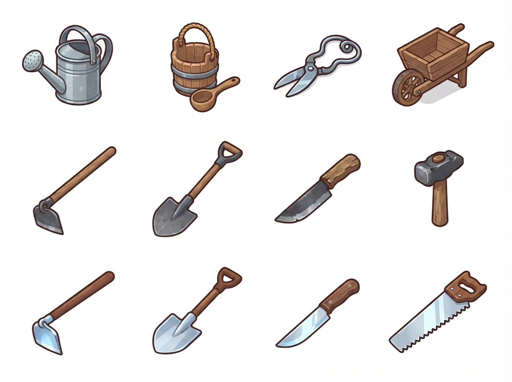
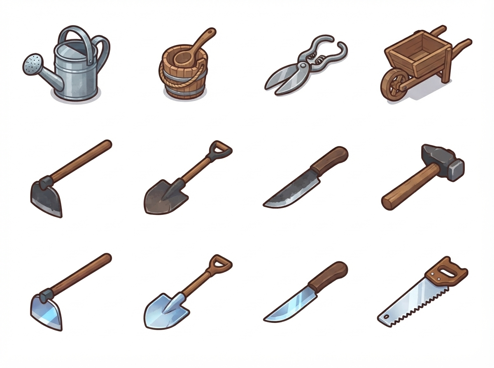
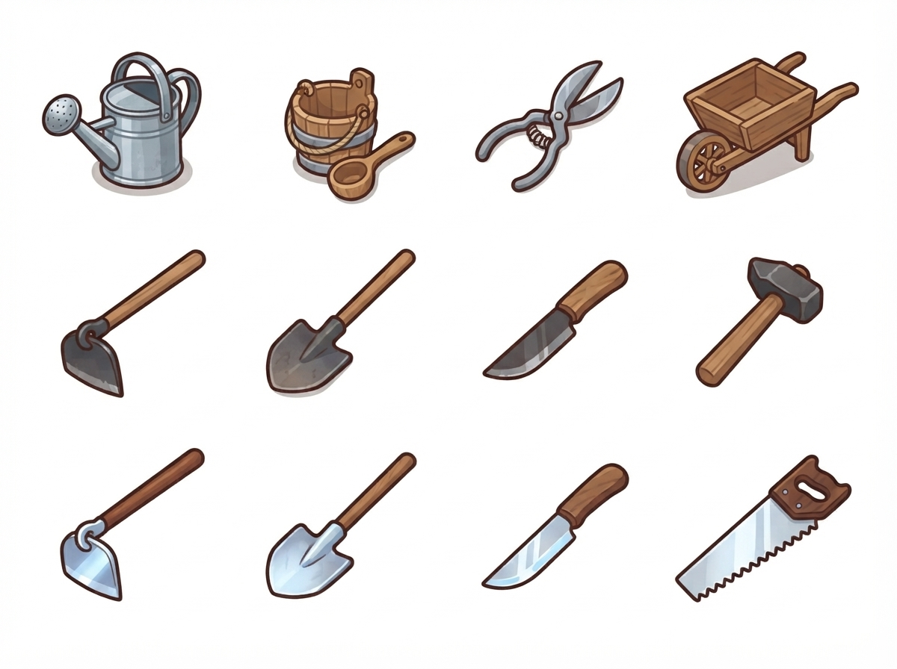

Green frame = the pick used in the game. To swap: python3 .claude/skills/openart-pictures/fetch.py pick sheet65-tools <version>, then import again.



A sprite sheet of exactly 12 separate objects in 3 rows of 4: hand tools of an old-fashioned farm, as item icons, in exactly the art style of reference image 1 (use it only for the style): bright, friendly mobile-game cartoon, thick rounded dark outlines, flat colours with simple cel shading, chunky cute proportions, three-quarter top-down view (isometric, like Hay Day), small soft shadow under each. Plain pure white background, evenly spaced with wide white space between them, none touching, each one solid piece with no loose drops, splashes, sparks, sparkles or motion lines beside it. No text, no letters, no numbers, no captions under the objects, nothing under the objects but white, no frames, no grid lines, no people, no hands, no faces on any object. Every tool is seen from the same angle at about the same size. Row 1: (1) watering can: a grey galvanised metal watering can with a long spout, a round sprinkler rose on the spout and an arched handle; (2) watering scoop: a small wooden bucket with a rope handle and a long-handled wooden scoop dipped in it; (3) sheep shears: a pair of hand shears with two steel blades and a curved spring handle; (4) wheelbarrow: a wooden wheelbarrow with one wooden wheel and two wooden handles. Row 2, the iron tools, dull dark grey forged iron with plain wooden handles: (5) iron hoe; (6) iron shovel; (7) iron knife: a sturdy farm knife with a dark iron blade; (8) smith's hammer: a heavy hammer with a dark iron head and a wooden handle. Row 3, the steel tools, bright polished silver steel with a blue shine and smooth darker wooden handles, otherwise the same shapes as the iron ones: (9) steel hoe; (10) steel shovel; (11) steel knife; (12) master saw: a hand saw with a long polished steel blade with teeth and a dark wooden handle.